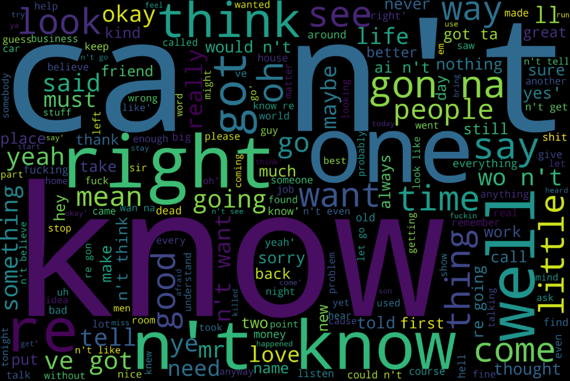
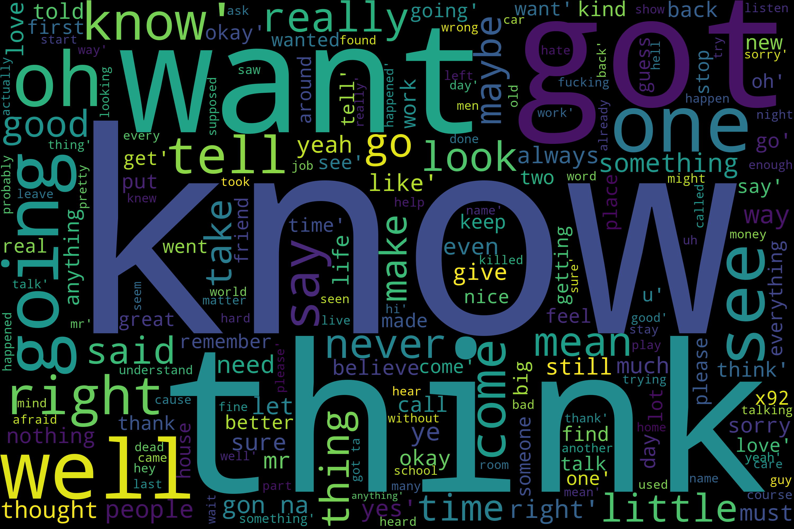
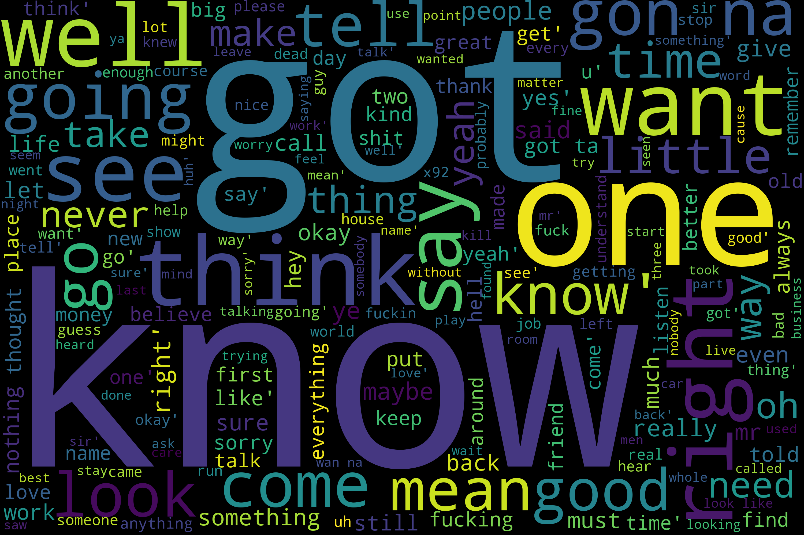

Movie Character Gender Detection
Predicting the gender of a movie character with machine learning using utterances in scripts.
{% if message %}
It's a {{ message}}!
{% endif %}Gender Detection & Prediction
Is there a bias towards a certain gender in movie scripts? The purpose of this project is to see if a machine learning algorithm can predict a character's gender from the words spoken by the character in the movie script.
Gender Bias
There is a bias in scripts towards male characters. There are almost twice as many male characters than female characters. However, there is not as big of a bias as we originally thought and we adjusted the training dataset so that there were an equal number of lines for female and male characters.
The male characters had 2.3 times more lines than a female character. A female character got to speak 2.3 times less than the male characters. Given that women are a little more half the population movie scripts are not representing reality accurately.
Words spoken by each Gender
The words spoken by each gender were not very different. The first round of word clouds contained mostly names and did not show anything of interest. This was improved by including character names in the stopwords that were removed later.
The words that female characters say
The words that male characters say shows …TBD…